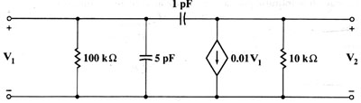

C03 AC analysis: Find Z parameters of net with one dependent source
Question. Find the four z parameters for w=1E8 rad/s for the equivalent circuit of the transistor of high frequency, shown below. Give parameters in polar form.

Solution:
1) Label nodes and elements. Define a variable containing circuit description. I used this description:
"r1,1,0,1E5; cx,1,0,5E-12
; cy,1,2,1E-12; jd,2,0,0.01*v1; r2,2,0,1E4" àcir2) Run the ports tools, specifying the terminal nodes, which
are 1 and 2.
sq\port(cir,1,2)
Now the program displays a dialog box, in which you have to specify
the desired parameters (which you set to z), give a name to the
parameters (p is a good name) and specify the analysis you want
to perform (in this case AC). When done, press Enter. The process is complex,
so you have to wait some time. After a while, the calculator displays...
Done
3) Since your parameters are z and their name is p, the answers are stored in the following variables: zp11, zp12, zp21 and zp22. They are also shown in screen. Suppose you want to retrieve them after they've been displayed in screen. You can ask for them, using the absang() tool to display them in polar form.
sq\absang(zp11)
"133.149 < -47.6442º"
sq\absang(zp12)
"94.1503 < -2.6442º"
sq\absang(zp21)
"9415.51 < -86.7829º"
sq\absang(zp22)
"564.98 < -3.59904º"
Answer: The parameters obtained are the right ones.